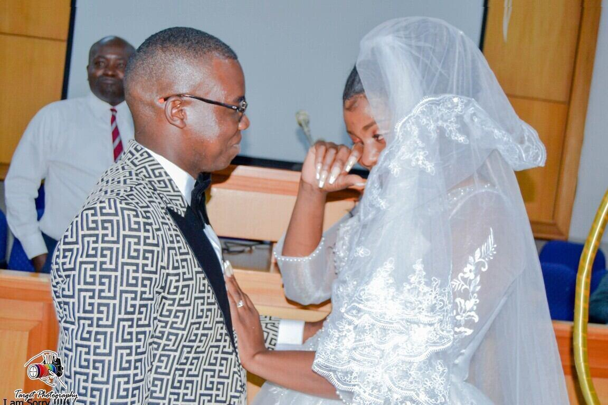

Owen Simbarashe Jakopo
About Me
I am Owen Simbarashe Jakopo from Zimbabwe. I am passionate about web development and eager to enhance my skills in this dynamic field.
I am currently pursuing a degree in Software Development at Brigham Young University-Idaho with resources from byupathway worldwide.
I began my academic journey in 2020. Family responsibilities required pauses, but I remain committed to completing my education.
Family Comes First
I am married to Memory Antonio, my best friend and eternal companion. We have two sons who motivate my continued learning.
Balancing family and studies is challenging, but their support fuels my dedication to succeed in web and computer programming, web development and eventually become a successful software engineer.
My family is my greatest inspiration, and I am committed to achieving my goals for their future.
WDD 131: Dynamic Web Fundamentals
This course has provided me with a solid foundation in web development, covering essential topics such as HTML, CSS, JavaScript, and responsive design. Through hands-on projects and assignments, I have gained practical experience in creating dynamic and user-friendly websites.
The knowledge and skills I will acquired in this course will equip me to build engaging web applications and enhance user experiences. I am excited to apply these skills in real-world scenarios and continue my journey in web and computer programming, web development and software development.